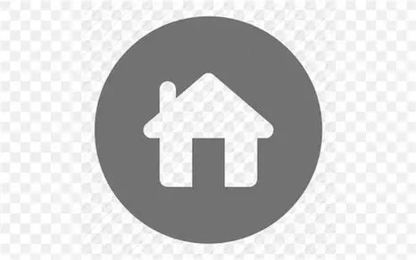
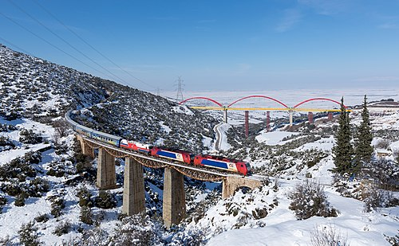
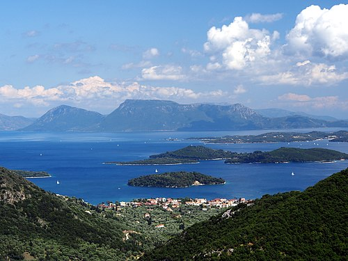
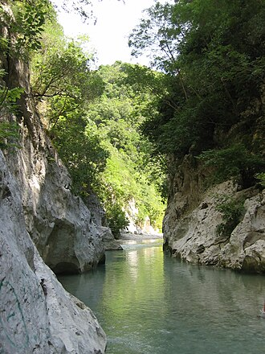

Image de la grêce

La plaine littorale d'Argolide.
wikipedia

Train circulant sur la ligne Athènes - Thessalonique sur le viaduc de Kifera.
wikipedia

Leucade.
wikipedia

L'Achéron, en Épire, est l'un des principaux cours d'eau du pays.
wikipedia